Multi Cloud Index
A Powerful Project to make Index of any Cloud Service using RCLONE CONFIG FILE and cross all download limits or even stream!🔥
🆕What's New?🆕
1.Unlimited Download or Stream.😍
2.Faster Login using RCLONE CONFIG FILE.😉
3.Added Dark theme.😎
4.Added Index Authorization.🔒
5.Add as many cloud services (Multiple Times) as much you want.🔥
6.Permanent Direct Download.😆
📑 Introduction
Are you frustrated from Download or stream limits? Not any more!😊.This project helps you to create and deploy your own Multi Cloud Index using which you can download files or even stream them without any limits.To make your Work more simple, you can use RCLONE CONFIG FILE with this project to directly add your Cloud Service account in your Index.And for hosting your Index, you can either use Heroku or Railway app for best experience.You can also switch between Light and Dark theme to make it more comfortable and add Index Authorization for protecting your data against unauthorized access.🔒The file link which you will get from this Index is a permanent link (24*7) and will work until your Cloud Account and can also be used in large number of CLI(s).You can deploy your own index from any device including Phone,Laptop and PC or anything which have a simple Browser! Now if you are worried about creating RCLONE CONFIG FILE,😎 then don't worry, I already got you covered, I made a totally Cloud based setup which can be used in any device have a Browser for that. You will get its details below in this Guide.
📦 Creating Rclone Config file
Now if you think that this is a rocket science,then relax! I have created a super easy RCLONE CLOUD SETUP and now you don't need to download anything.You can create it in any device which have a simple browser.I have created a complete simple guide, just click on the below given Button to start creating your RCLONE CONFIG FILE online.In this project you just have to copy the code of RCLONE CONFIG FILE after opening it in any simple Text Editor app and paste it during the Setup of your Index.
Create Rclone Config File Online
1.First Click on the Above Button and Read the instruction.
2.After Successfully Downloading the RCLONE CONFIG FILE, open it in any simple text Editor and copy its code
3.Now after copying the RCLONE CONFIG FILE code. Go to gist.github.com and paste the code and save it with name "rclone.conf" and click "Create secret gist".

4.After that! Now click the "Raw" button to get the direct link to your gist.
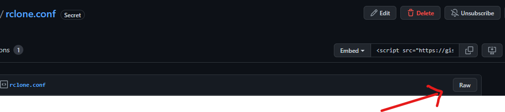
5.Once it opens your code in a new tab just copy the URL of that page which will look like this:
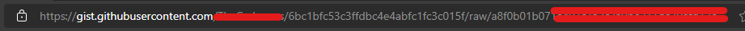
6.Now you are ready to read the Next section!
🪧 Before you Proceed!
1.You can add custom Domain in your Index if you deploy it using Railway App.
2.Railway App can take time larger than Heroku to make Index working but difference is too small.
3.If you add Cloud Account which have large data which was uploaded unofficially beyond the max Storage limit plan that Service provide then it may not open, however in most cases it works!
4.Some Cloud Services do not allow you to stream without downloading the Video even using this Index! to fix it, there is a Trick in this Guide.
⚙️ How to use?
Deploy on Heroku:
1.First open the app deployment page on Heroku: Open it
2.Now if you don't have a Heroku account then create once or just login!
3.After opening the Deployment page, Enter the following Values
1.App name - Give a Nice name to your Index.
2.CONFIG_IN_URL - Paste the URL which you copied from STEP 5 written in above section.
3.indexauthentication - If you want to add password protection to prevent unauthorized access then change the value to "true" and change the below two values otherwise keep it "false" and ignore the following two values
4.INDEXpassword - If you set authentication to "true" then change its value! This value will be your Index Password
5.INDEXusername - If you set the password then change this value! This value will be your Index Username to login
6.template - You can turn Dark mode on and off! Just type "light" to turn it off and "dark" to turn it on.
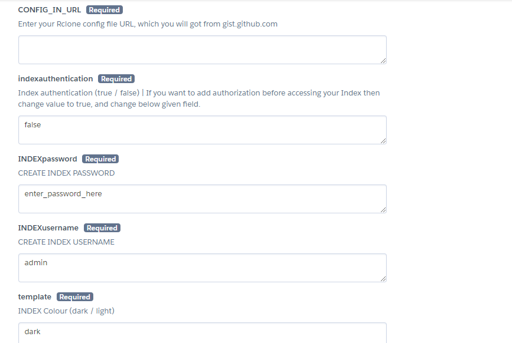
4.Now click on the Deploy button and wait patiently and once it got successful deployed, click View App button
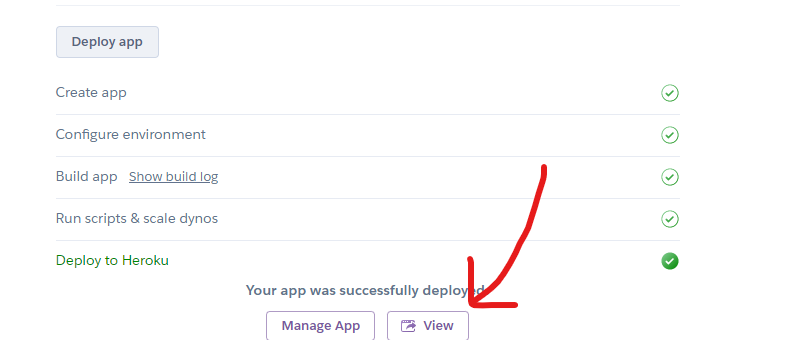
5.Clicking "View App" button will open a new website which is your index! Just remember the URL of your Index and access it anytime and anywhere.
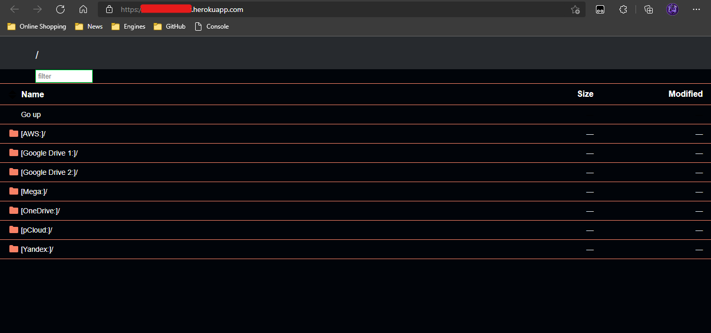
6.If you deploy your Index through Heroku then its URL should be like this: https://{appname}.herokuapp.com/
7.Sometimes after deploying the Index! It may take max 10 Minutes to start working.
Deploy on Railway app:
1.First fork this Repository to your GitHub Profile and go to https://railway.app/dashboard.
2.Now Login or Create a new Account on it using only GitHub.

3.After logging into Railway, Click on "New Project".
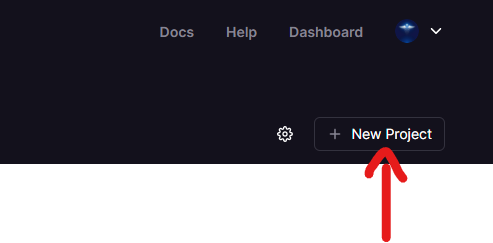
4.Choose "Deploy from Repo" to deploy your forked repository.
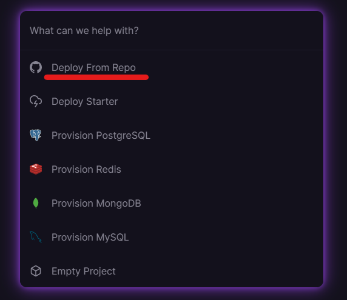
5.Then select "Multi-Cloud-Index" Repository from the list.

6.Click "Add Variables" and enter the following Values to configure your Index.
1.CONFIG_IN_URL - Paste the URL which you copied from STEP 5 written in above section.
2.indexauthentication - If you want to add password protection to prevent unauthorized access then change the value to "true" and change the below two values otherwise keep it "false" and ignore the following two values
3.INDEXpassword - If you set authentication to "true" then change its value! This value will be your Index Password
4.INDEXusername - If you set the password then change this value! This value will be your Index Username to login
5.template - You can turn Dark mode on and off! Just type "light" to turn it off and "dark" to turn it on.
7.Finally! Click on the "Deploy" button and let it get deployed! Index can take maximum 10 Minutes to start working after successfully getting deployed.
2.indexauthentication - If you want to add password protection to prevent unauthorized access then change the value to "true" and change the below two values otherwise keep it "false" and ignore the following two values
3.INDEXpassword - If you set authentication to "true" then change its value! This value will be your Index Password
4.INDEXusername - If you set the password then change this value! This value will be your Index Username to login
5.template - You can turn Dark mode on and off! Just type "light" to turn it off and "dark" to turn it on.

8.After waiting for 10 Minutes click on the Name under "Deployment" Tab to open your Index as shown in the Image.

🖍️ Adding Custom Domain
On Railway App:
As I already said! That you can add custom domain to your Index,much more easily on Railway and it does not requires adding any special information or verification like adding Card or Phone Number if you deploy it on Railway app. Just click on the "Domain" tab to get all settings about it, as shown in the given Image.
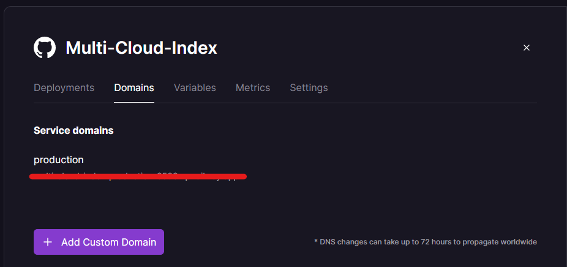
The Railway will ask you to just set a new CNAME Record in your Domain by going into the Domain Registrar's Website
Record Details:
Name: @
TYPE: CNAME
Value/Target: Should be the subdomain of Railway for your Project
On Heroku:
You can also add custom domain for the Index deployed on Heroku! For it just add Credit Card in your Account by going into:
Account Settings>Billings>Add Credit Card
And then you can add Custom domain by going back into
App>Settings>Add Domain.
Tip: If we look on both Options,then adding custom domain using Railway is much easier than Heroku.
🔗 Using Direct Link!
This Project provides you permanent direct download link of any file (In any Cloud) to use it in any Internet Download Manager (IDM) or in large number of CLI(s).To Copy the Direct Download link! Follow the below steps:
On Mobile:
1.Just Hold down on a file name in your Index and click "Copy link address" in pop-up.

2.And you have successfully Copied your Direct Download Link.
On PC:
1.Just right click on the File Name and click "Copy Link".
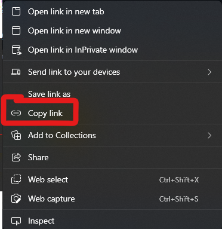
📽️ Streaming Videos
You can use VLC Media App for both Phone/PC/Laptop and Tablet.Lets learn how to do that!
For Mobile Phone:
1.First Download VLC Media App for Android or iOS.
2.Now open it and click "More" option then "New Stream" option as shown in the given image.

3.Then Enter your Direct Link which you get from above "Using Direct Link" Section! And then click Continue Button.

4.Finally wait for maximum 5 Minutes, (Don't touch screen) to let VLC to Establish a connection with your Index. The Video will start playing automatically!
For PC:
1.First Download the VLC App for Windows or MacOS or Linux
2.Now Click "Media" Tab and choose "Open Network Stream" from the list or Simply press CTRL+N Keys.
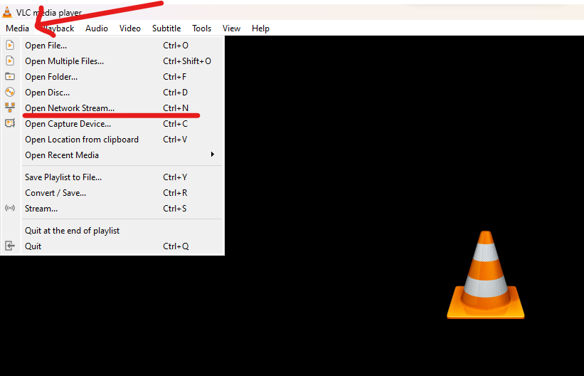
3.It will open a Dialog Box as shown in the Image! Enter your Link which you got from "Using Direct Link" Section and click "Play" button.
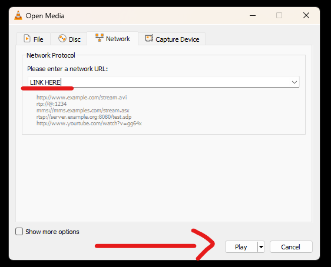
4.Finally wait for maximum 5 Minutes, (Don't touch screen) to let VLC to Establish a connection with your Index. The Video will start playing automatically!
📃 Index Preview
 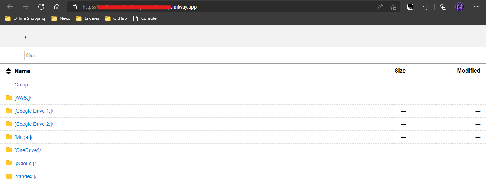
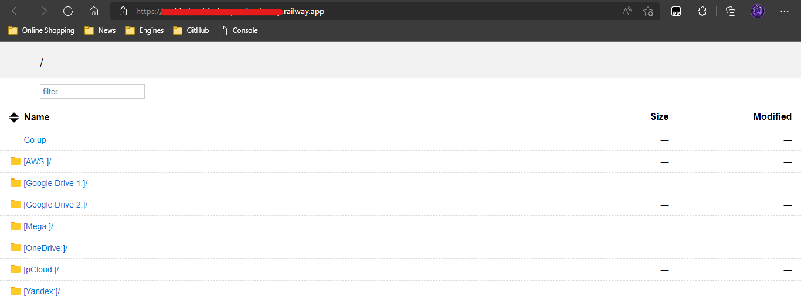
🖇️ Quick Links
Text Editor Download:
Text Editor for Android
Text Editor for iOS
VLC Media Player Download:
VLC For Android
VLC For iOS
VLC For Windows
VLC For MacOS
VLC For Linux
⛑Contact Us!
Join our Update Channel at Telegram: Join Now!
Directly Contact the Developer using Telegram @HelpAutomatted_Bot
❤️Credits & Thanks
Dr.Caduceus: For creating this Powerful Project and this All-in-one Guide.
DevAnaZ: For Project on Docker Hub.